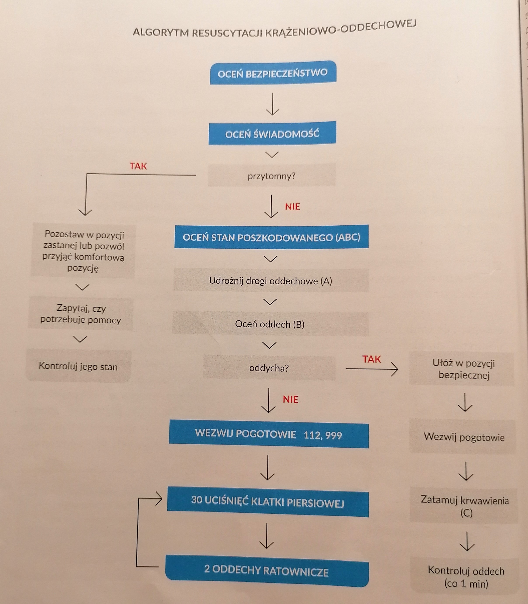

Resuscytacja krążeniowo-oddechowa
NZK - Nagłe Zatrzymanie Krążenia
Objawy NZK:
Utrata przytomności.
Brak oddechu.
Brak tętna.
Wiotkość mięśni.
Jeśli nie podjęto Pierwszej Pomocy:
Silne zabarwienie warg, paznokci, skóry najdalej oddalonej od serca.
Poszerzone źrenice, niereagujące na światło.
Ogólna bladość ciała.
Resuscytacja - Pierwsza Pomoc:
1. Sprawdź czy jest bezpiecznie (miejsce, otoczenie, okoliczności)
2. Sprawdź stan świadomości poszkodowanego (delikatnie potrząśnij za ramię).
Jeśli poszkodowany nie reaguje, głośno wołaj o pomoc.
3. Oceń stan poszkodowanego wg. schematu ABC:
A - drożność dróg oddechowych,
B - oddech
C - krążenie
4. Jeśli poszkodowany nie oddycha, wezwij Pogotowie Ratunkowe, albo wyznacz kogoś by to zrobił (jeśli są inni świadkowie).
5. Natychmiast przystąp resuscytacji krążeniowo-oddechowej.

Uciskanie klatki piersiowej
Ułóż poszkodowanego na twardym podłożu, uklęknij obok niego na wysokości tułowia i odsłoń mu klatkę piersiową.
Ułóż nasadę jednej dłoni pośrodku klatki piersiowej, połóź na niej drugą nasadę dłoni i spleć palce.
Pochyl się nad poszkodowanym, wyprostuj ręce w łokciach i ustaw je prostopadle do mostka.
Uciskaj klatkę piersiową rytmicznie z częstotliwością 100-120 razy na minutę.
Po każdym uciśnięciu klatka piersiowa powinna wrócić do pierwotnego kształtu.
Przerwy między uciskami powinny trwac tyle co ucisk.
Nie odrywaj dłoni od mostka.
Oddechy ratownicze
Wykonywaj 30 uciśnięć klatki piersiowej, a następnie udrożnij drogi oddechowe poszkodowanego:
jedną dłoń połóż na czole i odchyl głowę, dwoma palcami drugiej ręki unieś żuchwę.
Usta poszkodowanego powinny być lekko otwarte.
Palcem wskazującym i kciukiem dłoni umieszczonej na czole zaciśnij skrzydełka nosa.
Drugą reką podtrzymuj jego żuchwę.
Nabierz powietrza jak przy normalnym wdechu i obejmij usta poszkodowanego własnymi ustami (za pomocą maseczki).
Wdmuchuj powietrze do ust poszkodowanego przez około sekundę.
Obserwuj czy klatka piersiowa unosi się przy wdechu i opada przy wydechu (wtedy zwolnij zaciskane skrzydełka nosa).
Powtórz w ten sposób oddech i wróć do uciskania klatki piersiowej.
Kontynuuj uciskanie klatki piersiowej i oddechy w stosunku 30:2, aż do przyjazdu Pogotowia Ratunkowego.
Jeżeli pomocy udziela kilku ratowników, osoby wykonujące resucytację powinny się
zmieniać co 1-2 minuty, ponieważ po tym czasie jakość uciskania spada.
AED (Automatyczny defibrylator zewnętrzny) - Urządzenie analizujące rytm serca osoby poszkodowanej
i jeśli to konieczne wytwarza impuls elektryczny prądu stałego do serca
Obsługa AED:
Włącz AED, wyjmij elektrody z opakowania i przyklej je na klatce piersiowej poszkodowanego zgodnie z instrukcją.
Odsuń się od osoby poszkodowanej i upewnij się, że nikt jej nie dotyka gdy AED prowadzi analizę rytmu serca.
Jeśli defibrylator zaleci impuls elektryczny, naciśnij przycisk wyzwalający impuls do serca.
Następnie kontynuuj resuscytację, aż AED ponowi analizę rytmu serca (po około 2 minutach).
Jeśli defibrylator nie zaleci defibrylacji prowadź resucytację, aż AED ponowi analizę.
Kontynuuj resuscytację do przybycia Pogotowia Ratunkowego.
 Moje Bezpieczeństwo
Moje Bezpieczeństwo